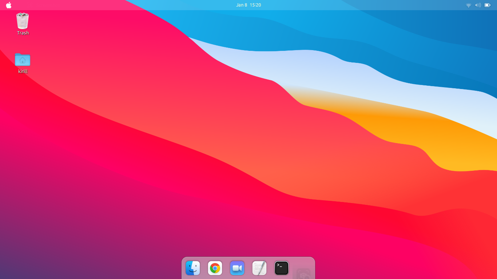

Built for the user
Simple and elegant design for user experience
Secure
Based off Ubuntu, MactorOS is secure and user friendly.
User Friendly
Since MactorOS is resembling macOS, it has a nice fast design that is intuitive and easy to navigate through.

Sleek, Elegant Design
Using macOS looks and Icons, this is a very good distro to use if you are switching from macOS or just love the design!.
MactorOS Icons
We use macOs Big Sur Icons, which improve the look and feel of the UI experience.
How to download and setup
Once you click the download button on the top of the page, download the .iso file then follow the instructions to finish customizing MactorOS and making it look like macOS.